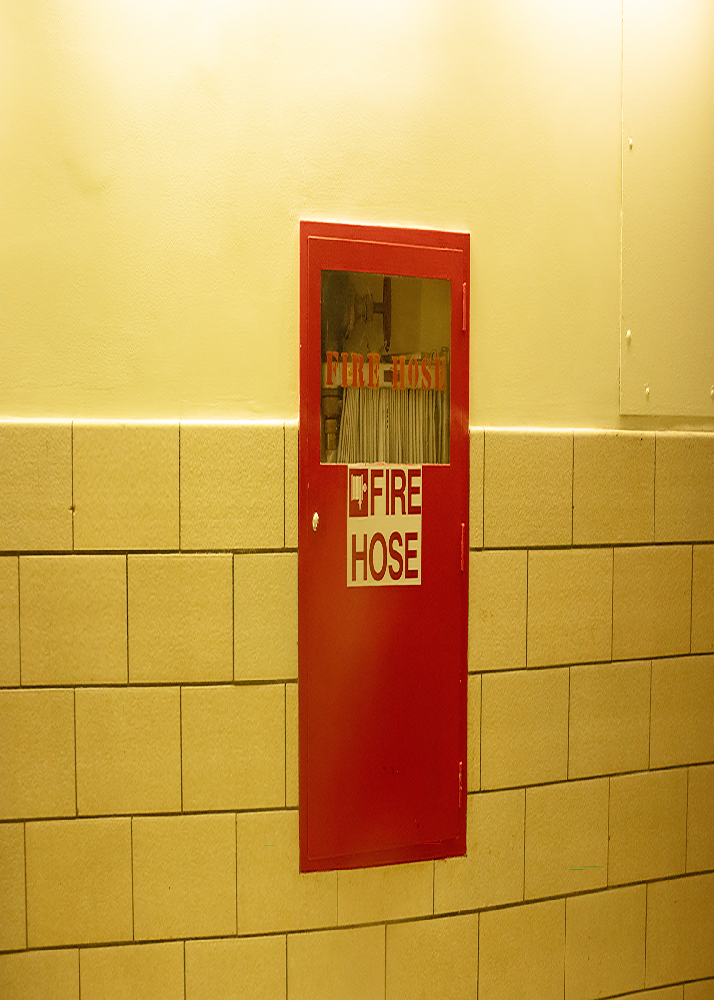

After editing Image 1, this formatting was a bit complex as it position in portrait, where as image 1 was in landscape mode. In contrast to Image 1, the position on this images focuses on the subject within the frame. I used this photo in focusing on the fire hose sign,while seeing how tight the frame became. This image format is usually for portraits, profile pictures, selfies, focusing on the small and large details.
Go to Image 1